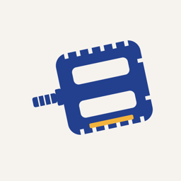

PedalsPrivacy policy
Effective November 9, 2026
Pedals is a ride journal that keeps your data on your phone. There is no account, no advertising, no analytics and no tracking. This page explains the few things that do leave your phone, and why.
What stays on your phone
- Your rides, ratings, tags, notes, favorite bikes and stations, and destinations.
- The stations where rides started and ended. Pedals stores station names, never your coordinates.
- Answers from bike pages (where a bike was docked and when).
- A troubleshooting log of app events, which never includes bike numbers, QR codes, links or notes.
Nothing here is sent to us. If you export a backup or save the troubleshooting log, the file goes wherever you choose to save or share it.
Camera
The camera reads bike QR codes and, if you ask, the printed bike number. Images are processed on your phone and not saved or sent anywhere.
Location
With your permission, Pedals uses your location while the app is open to show nearby stations and the station you’re at. Your location is not stored or sent to us.
Notifications
Ride, reminder and dock alerts are scheduled on your phone. On Android you can optionally give Pedals notification access so it can notice the bike share app’s ride notification and tell when a ride starts and ends. It checks only that app’s notifications, on your phone, including whether one mentions the bike you’re riding; their text isn’t stored or sent.
Services Pedals contacts
- Bike share system data (gbfs.lyft.com): station lists and live bike and dock counts. No personal information is sent.
- Bike pages (citibikenyc.com): for bikes you scanned or rated, Pedals opens the bike’s public page by its QR code to find its number and where it’s docked, the same page your camera opens when you scan the label. Lyft’s privacy policy applies to those requests.
- Map tiles (tiles.openfreemap.org): map images for the area on screen.
- Community ratings, only if you turn on sharing: for each shared rating, the bike number, stars, tags and the week of the ride, under an anonymous ID created for this install. Notes and ride times are never shared. Shared ratings are stored with Supabase. You can withdraw all of them in Settings; reinstalling the app creates a new anonymous ID, and restoring a journal backup moves your shared ratings to it.
- Bike locations, only if you turn on sharing: when a ride ends, the bike number, its QR code, and the station where its public page shows it docked, with the time rounded to 15 minutes, so other riders can find well-rated bikes. When you open a station where other riders reported a bike, Pedals checks that bike’s public page and reports what it shows the same way. These reports aren’t stored with your anonymous ID or anything else about you, so they can’t be withdrawn. Each bike keeps only its latest location, and locations are deleted after a week.
Like any internet request, these services may see your IP address. Pedals doesn’t sell or share data with anyone else.
Children
Pedals isn’t directed at children under 13 and doesn’t knowingly collect their information.
Your choices
You can deny camera, location or notification permissions and keep using the rest of the app. Deleting the app deletes your journal. To remove shared community ratings, use Settings → Community ratings → Withdraw shared ratings.
Changes and contact
If this policy changes, the new version will be posted here with a new date. Questions: pedals@kyuhunl.ee.